魔鬼 · Devil
魔鬼主要居住并统治地狱位面，是最强大的守序邪恶生物。它们在特征与能力上与混乱阵营的恶魔颇为相似；本条目先说明魔鬼的共通属性，随后列出各类型与魔鬼公爵的具体资料。
魔鬼遵循明确的等级与指挥体系，不敢违抗魔鬼大公；但不同位面及不同大公之间仍有激烈竞争，甚至公开敌对。低阶魔鬼彼此争斗，地狱公爵则争相夺取阿斯摩蒂尔斯的王位；然而这位大魔王总能挑拨各方，使其继续统治最低层的地狱。
魔鬼都能在地狱位面内移动，但未经许可不得擅自行动，地狱公爵除外；它们也能随意前往盖亘那、哈迪斯与阿刻戎位面，偶尔会穿行于星界。若没有适当仪式、开启传送门，或说出并让人听见魔鬼的真名，魔鬼便无法进入其他位面。
高阶魔鬼或地狱公爵的物质形体可以被摧毁，但只有在地狱或与地狱相邻的下层位面中遭遇并击败它们，才能真正杀死它们。魔鬼无法被制服：低阶魔鬼总会战斗至死；高阶者若受到严重威胁则会谈判。若命令得当，魔鬼会服从，但这十分危险：不当命令会破坏约束它们服从的法律，通常还须以指挥者的灵魂签订契约。守序邪恶以外的角色也能召唤或与魔鬼交涉，不过与它们周旋务必格外小心。正确绘制的魔法法阵可以暂时阻挡魔鬼；阻挡高阶魔鬼或魔鬼大公时，还须在法阵中绘入徽记。神圣的善良遗物或神器会驱退魔鬼。
所有魔鬼只要有机会，都能同时攻击两名或更多对手。若高阶魔鬼的物质形体被摧毁，它将沦为最低阶的魂魔，在受折磨中度过 90 年后才可恢复原有地位。若地狱公爵的物质形体被摧毁，该公爵将在自己的地狱位面内被禁锢 10 年（除非此前再次被正确召唤），并蒙受巨大耻辱；而地狱中的怒火无与伦比。
魔鬼护符 Devils’ Talismans。每一种低阶魔鬼都有一套特殊的铭文，可将该类魔鬼束缚于护符持有者身边 9 天，或至少阻止该类魔鬼伤害持有者。高阶魔鬼也可被命令 9 小时，或被阻挡在外。魔鬼大公的护符能令其执行一项差事，或在正确使用时阻止特定的地狱公爵伤害持有者。使用任何魔鬼护符都必须格外谨慎；邪恶生物使用护符时必须献祭人类。单是注视护符就很危险：若未用法术或魔法法阵妥善保护，研究护符便有 10% 的概率召来与之对应的某一类魔鬼或特定魔鬼。说出护符上的名字，则必定会召来相应类别或特定的魔鬼。魔鬼大公会察觉未受妥善保护的护符；若护符涉及它或其位面，它们便会派遣手下杀死持有者。
共通特征 · General Characteristics
只有艾尼瑞斯、倒刺魔与骨魔会受到非魔法武器伤害。更强大的魔鬼——马利布兰奇、冰魔与深狱炼魔——可被魔法武器或银制武器击中，普通武器则无法伤害它们。
所有魔鬼都能或可施展以下能力：魅惑人类、暗示术、幻象、红外视觉、无误传送、侦测阵营、造成恐惧（效果因个体而异）及操纵死尸。魔鬼可以召来同类，效果类似怪物召唤术。它们具有特殊形式的心灵感应，能理解并与任何有智慧的生物交谈。
魔鬼受到下列攻击形式影响时，所承受的伤害如下：
| 攻击形式 | 所受伤害 |
|---|---|
| 酸液 | 全额 |
| 寒冷 | 一半 |
| 电击（闪电） | 全额 |
| 火焰（龙息、魔法火焰） | 无 |
| 气体（毒气等） | 一半 |
| 铁制武器 | 无* |
| 魔法飞弹 | 全额 |
| 毒素 | 全额 |
| 银制武器 | 全额 |
\* 若某类魔鬼会受到普通武器伤害，则铁制武器仍按相应武器类型造成伤害。
阿斯摩蒂尔斯 · Asmodeus
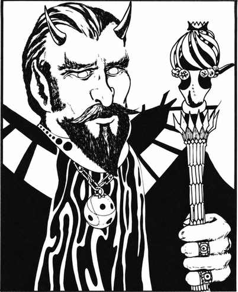 |
|
阿斯摩蒂尔斯是地狱大魔王，凭借力量与智谋统治所有公爵。他的体魄胜过任何其他魔鬼，力量堪比风暴巨人；其心计与狡诈也无人能及。他的宫殿坐落于地狱第九层最深裂谷的底部，由深狱炼魔及他所指挥的其他低阶、高阶魔鬼侍奉。每年一次，他可以命令所有魔鬼大公前来朝拜。
阿斯摩蒂尔斯可随意施展以下任一能力，每回合或每近战轮一次（视情况而定）：烟火术、造焰术、火墙术、冰暴术、冰墙术、持续光亮术、阅读语言、阅读魔法、侦测隐形、定位物体、隐形术、解除魔法、定身人类、定身怪物、改变自身形态、惑控、支配术、群体魅惑、誓约术、复原术、完全复生术，或替他人实现一个愿望。每天一次，他还能施展痛苦徽记、疯狂徽记、绝望徽记（目标对抗魔法的豁免检定失败便服从阿斯摩蒂尔斯），以及神圣或亵渎圣言。他随时可以召来 2 只低阶魔鬼或 1 只高阶魔鬼。这位大魔王的凝视可造成恐惧、恐惧与虚弱，或寒冷（令速度减半，且所有骰值承受 −5 惩罚）；目标可进行对抗魔法的豁免检定。
阿斯摩蒂尔斯持有一根发光的纯红宝石权杖。它具有吸收权杖的能力；以乳白色宝石尖端触及目标，还会造成重伤。奉命后，它能喷出寒霜锥、酸液射流或闪电束，分别如同相应的龙息武器。仅按宝石品质计算，这件权杖便价值 1,000,000 金币。
外观：阿斯摩蒂尔斯无疑是所有魔鬼中最英俊的，同时也是力量最强、最具谋略的一个。他所代表的终极邪恶，只有在他愿意显露，或忘乎所以、勃然大怒时，才会从这副美貌中显现出来。
巴尔泽布 · Baalzebul
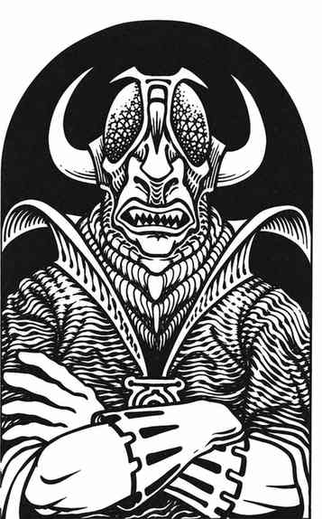 |
|
巴尔泽布统治地狱第六、七层——马尔博吉与马拉多米尼，尊号“苍蝇之主”（也有人戏称“谎言之主”）。他是仅次于阿斯摩蒂尔斯的强大魔鬼大公。马尔博吉是布满恶臭蒸气、烟雾、火坑与巨大洞窟的黑石位面；马拉多米尼则与之相似，但有护城河环绕的马利布兰奇城堡，以及巴尔泽布的巨型要塞。
在每回合或每近战轮（视情况而定）中，巴尔泽布可任选一项能力施展：烟火术、造焰术、火墙术、持续光亮术、阅读语言、阅读魔法、侦测隐形、定位物体、隐形术、解除魔法、改变自身形态、惑控、支配术（如同支配权杖）、定身人类、魅惑怪物、誓约术、复原术、完全复生术，或替他人实现一个愿望。每天一次，他可以施展痛苦徽记、疯狂徽记及神圣或亵渎圣言。他随时可以召来 1–4 只角魔。凡被他直接凝视者，都会感到恐惧与虚弱；若对抗魔法的豁免检定失败，便会浑身颤抖、瘫倒在地，直到凝视移开后的 1–4 个近战轮。
倒刺魔 · Barbed Devil
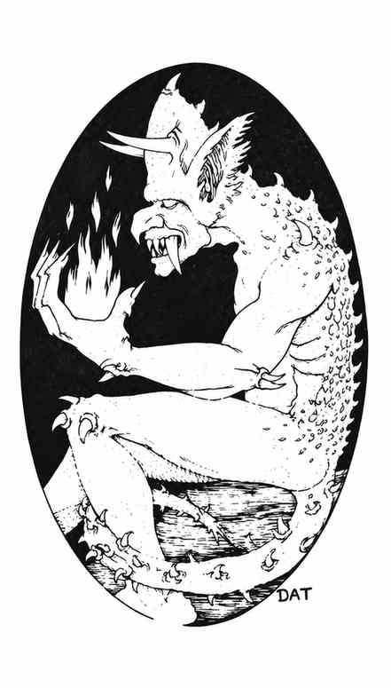 |
|
倒刺魔栖居于地狱第三、四层，是出色且时刻警觉的守卫，不会遭遇突袭。未经许可闯入的生物会立刻被投进地牢牢房受尽折磨。它们不携带武器：长满角质倒刺的双手与可怕的尾巴已足以伤敌。倒刺魔击中对手时，能令对方恐惧；目标可进行对抗魔杖的豁免检定。每回合或每近战轮（视情况而定），它们可任选一项施展：烟火术、造焰术、定身人类，或以 30% 的成功率召来另一只倒刺魔。
骨魔 · Bone Devil
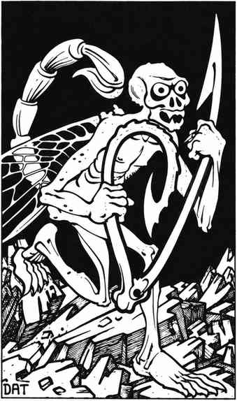 |
|
骨魔栖居于地狱下层，尤其是第五层；它们生性恶毒，喜欢折磨弱小生物。骨魔喜寒恶热，还拥有超视术，可在 60 尺范围内看见紫外光谱中的光线。
骨魔有一柄巨大的骨钩，用来钩住并伤害对手。目标被钩中后，有 50% 的概率被牢牢钉住；随后骨魔会以尾巴攻击，造成 2–8 点伤害，并使目标失去 1–4 点力量，除非其对抗毒素的豁免检定成功。力量损失持续 10 个近战轮。
每回合或每近战轮（视情况而定），骨魔可任选一项能力施展：在半径 5 尺范围内制造恐惧、制造幻象、飞行、隐形、侦测隐形、施展恐惧术，或以 40% 的成功率召来另一只骨魔。每天一次，它还能制造一道冰墙。
迪斯帕特 · Dispater
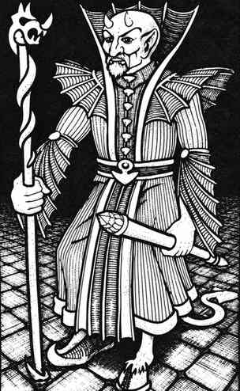 |
|
迪斯帕特统治地狱第二层，其首都为钢铁之城迪斯，整个位面也因此得名。迪斯帕特在城中建有宏伟至极的宫殿；城里满是僵尸、艾尼瑞斯，此外还有少量倒刺魔与马利布兰奇。
每回合或每近战轮（视情况而定），迪斯帕特可任选一项能力施展：烟火术、造焰术、火墙术、光亮术、阅读魔法、阅读语言、侦测隐形、改变自身形态、惑控、誓约术、复原术、完全复生术，或替他人实现一个愿望。他能以 90% 的成功率开启传送门；成功后，有 75% 的概率召来 1–3 只艾尼瑞斯，有 25% 的概率召来 1 只深狱炼魔。每天一次，他可以施展痛苦徽记与神圣或亵渎圣言。他的凝视会令所有未能通过对抗魔法豁免检定的人感到恐惧或寒冷。
外观：迪斯帕特邪恶而英俊；只有小角、尾巴与左脚的分趾蹄足以让人认出他并非人类。他持有一根具备支配权杖能力的权杖，以及一根威力加倍的击打法杖，可造成 4–24 点伤害。
艾尼瑞斯 · Erinyes
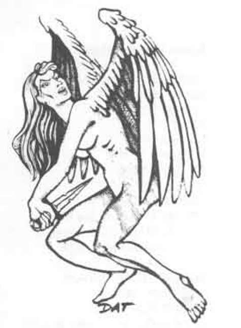 |
|
艾尼瑞斯居于地狱第二层，是魔鬼中最常被派往物质位面收集灵魂的一类。她们通常呈女性形貌，但也能化作男性。她们会用一把带有腐蚀性毒液的魔法匕首作战；伤口剧痛，未通过对抗毒素豁免检定的目标会昏厥 1–6 个近战轮。她们还携带一条纠缠套索。艾尼瑞斯可被普通武器命中。
每回合或每近战轮，她可任选一项能力施展：以凝视使目标恐惧（对抗魔杖豁免）、侦测隐形、定位物体、隐形术、改变自身形态、造焰术，或以 25% 的成功率召来另一只艾尼瑞斯。艾尼瑞斯的力量值为 18/01，但力量不带来命中或伤害加值。她们会追捕邪恶者，将其活捉并带回地狱，也可能以交易诱使凡人堕入邪恶。
格殷永 · Geryon
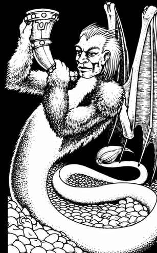 |
|
格殷永又被称为“狂野巨兽”，是地狱第五层的巨型统治者，力量足以匹敌风暴巨人。它喜欢抓住对手，以利爪撕扯，同时用剧毒尾巴刺击；目标对抗毒素的豁免检定承受 −4 罚值。它居住在位面中央的一座巨大城堡中，很少外出。
每回合或每近战轮（视情况而定），格殷永可任选一项能力施展：冰风暴、冰墙术、光亮术、阅读语言、阅读魔法、侦测隐形、定位物体、解除魔法、隐形术、改变自身形态、惑控、誓约术、完全复生术，或替他人实现一个愿望。每天一次，它可施展痛苦徽记与亵渎圣言；还可开启传送门，召来 1–2 只骨魔（概率 60%）或 1 只冰魔（概率 40%），开启成功率为 95%。它的怒视会令目标恐惧（可对抗魔法豁免）。
格殷永持有一只巨大的公牛号角，吹响时可召来 5–20 只牛头人；这些怪物会战斗至死，每周只能吹响一次。
角魔 · Horned Devil
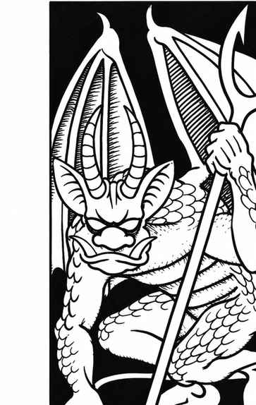 |
|
所谓“恶角”（Malebranche）主要来自地狱第六与第七层，是较弱的大魔鬼。它们有时会以“狗剩”“邪尾”“折翼”等名字称呼，憎恨任何比自己强大的存在，并畏惧更强的魔鬼。
角魔若持械，有 75% 的概率使用双叉，造成 2–12 点伤害；有 25% 的概率使用倒刺鞭，造成 1–4 点伤害，并使目标震慑同等数量的近战轮，除非目标通过对抗魔法豁免检定。未持械时，它会以爪、爪、噬咬攻击。无论是否持械，它还可用尾巴攻击，造成 1–3 点伤害；伤口会持续流血，每回合损失 1 点生命值，直到包扎或治愈。角魔周身 5 尺范围会散发恐惧气息，目标可进行对抗魔杖豁免检定。
每回合或每近战轮（视情况而定），角魔可任选一项能力施展：烟火术、造焰术、心灵感应、侦测魔法、幻象，或以 50% 的成功率召来另一只角魔。每天一次，它还能制造一道威力为普通三倍的火墙，造成 3–24 点伤害。
冰魔 · Ice Devil
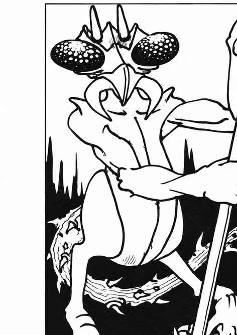 |
|
地狱寒冷的第八层主要由冰魔盘踞。它们无愧于大魔鬼之名，喜欢用利爪、颚爪与尾巴攻击并折磨受害者。少数冰魔（25%）携带巨矛，造成 2–12 点伤害；被击中的生物会因寒冷而麻痹，移动速度减半 50%，除非通过对抗麻痹的豁免检定。与其他大魔鬼一样，冰魔都有自己的名字。
每回合或每近战轮（视情况而定），冰魔可任选一项能力施展：飞行术、冰墙术、侦测魔法、侦测隐形、改变自身形态，或开启传送门召来 2 只骨魔（概率 70%）或 另一只冰魔（概率 30%）；开启成功率为 60%。每天一次，它可以施展冰风暴。
冰魔具有 60 尺超视术，每个近战轮恢复 1 点生命值；其擒抱力量值为 18/76。它周围 10 尺范围会散发恐惧气息，目标可进行对抗魔杖豁免检定。
劣魔 · Lemure
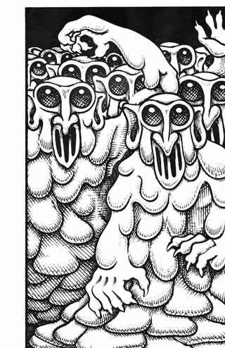 |
|
劣魔是居于九层地狱的死者所化成的形体。这些模糊的人形团块会受魔鬼折磨，心智已完全丧失，见到非魔鬼生物便会攻击。它们每个近战轮恢复 1 点生命值，因此通常不会被环境或魔鬼造成的伤害彻底消灭；只有受祝圣之物（如圣水、圣剑等）才能将其永久毁灭。劣魔不受任何睡眠、魅惑等类似效果影响。在地狱中待过一段时间后，有些劣魔会被选中转化为幽魂或怨灵（见相关条目）。
深狱炼魔 · Pit Fiend
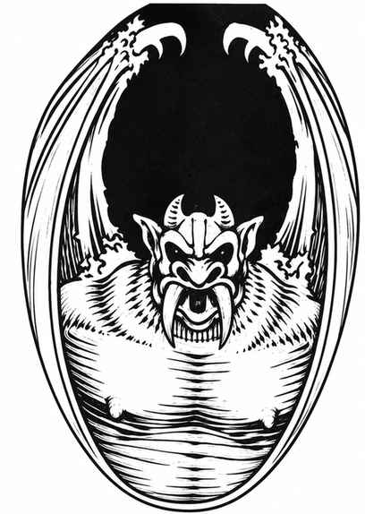 |
|
深狱炼魔居于地狱第一层，力量强大、秉性邪恶，并都有自己的名字；它们是阿斯摩蒂尔斯的贴身仆从。每只通常携带一件钩刃状的 ancus 武器和一根锯齿狼牙棒，可在一个近战轮内同时使用两者攻击。
每回合或每近战轮（视情况而定），深狱炼魔可任选一项能力施展：烟火术、造焰术、火墙术、阅读语言、阅读魔法、侦测魔法、侦测隐形、改变自身形态、定身人类，或开启传送门召来 1–3 只倒刺魔（成功率 60%）或 另一只深狱炼魔（成功率 70%）。每天一次，它可施展痛苦徽记；目标若未通过对抗魔法豁免检定，攻击检定承受 −4 罚值，敏捷降低 2，持续 2–20 个近战轮。深狱炼魔周围 20 尺范围会散发恐惧气息，目标可进行对抗魔法豁免检定。
所有深狱炼魔的力量值均为 18/00，每个近战轮恢复 2 点生命值。若尾击命中，目标会被尾巴缠住，每回合承受 2–8 点勒束伤害。